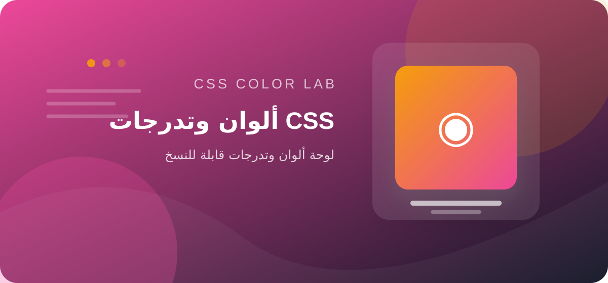

المخرجات والقيود
ينتج قيم CSS للألوان أو التدرجات بحسب الخيارات الظاهرة. لا يفحص تلقائيًا التباين أو اتساق لوحة الألوان في كامل الموقع.
اختر لونًا أساسيًا، وولّد لوحة ألوان متناسقة أو تدرجًا جاهزًا للاستخدام في تصميمك، مع معاينة مباشرة وأكواد قابلة للنسخ.

اختر اللون وانسخ القيم التي تحتاجها.
linear-gradient(135deg, #3156D9, #48D4C8)الألوان الناتجة اقتراحات تصميمية؛ افحص تباين النص والخلفية للتأكد من سهولة القراءة وإمكانية الوصول.
اختر الألوان والقيم المتاحة في الأداة، راقب المعاينة، ثم انسخ قيمة اللون أو التدرج وألصقها في ملف CSS.
ينتج قيم CSS للألوان أو التدرجات بحسب الخيارات الظاهرة. لا يفحص تلقائيًا التباين أو اتساق لوحة الألوان في كامل الموقع.
اختبر الألوان مع نصوص فعلية وحالات hover والتركيز، واحتفظ بمجموعة ألوان محدودة ومتناسقة.
لا تدخل كلمات مرور أو مفاتيح سرية أو بيانات شخصية حساسة. لا تفترض أن المعالجة محلية لمجرد أن الأداة تعمل في صفحة ويب؛ راجع سياسة الخصوصية وسلوك الشبكة قبل استخدام بيانات سرية.
اختبره في المتصفحات المستهدفة.
لا، افحص التباين بأداة مخصصة.
نعم، راجع القيمة والصقها في المحدد الصحيح.